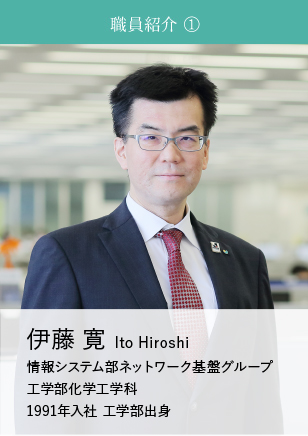

理系職員の働き方 理工系学部出身職員の活躍をみなさまにご紹介します
-

私が入社した1990年代前半は、文系学生の就職先と考えられていた生命保険会社に、理系学生も就職する動きがでてきた頃でした。私自身も自分の将来を考えたときに、視野をさらに広げ、急激に変化し続ける日本経済の中心に身を置き、挑戦する人生を送りたいと考え、機関投資家としても存在感を示す生命保険会社での活躍をめざして当社へ入社しました。なお、サークル活動などで文系の方々との交流が深かったことも、生命保険会社に入社するきっかけとなりました。
私が所属する情報システム部ネットワーク基盤グループは、会社を支える重要なシステムインフラの構築・運用を担っています。ＭＹライフプランアドバイザーの営業端末（マイスターモバイル）、職員が日々の業務で使用する端末や電子メール、ファイルサーバ、ポータルサイト等の管理に加え、さまざまな業務システムが稼働する数百台規模のサーバーの構築・運用、そしてこれらをつなぐ全国ネットワーク網の維持・管理を行なっています。IT系新技術を活用した経営戦略立案の重要性が増すなか、10年先の将来を見据え、最新のICT（情報通信技術。Information and Communication Technology）を活用したシステム構築に日々チャレンジできることが、やりがいにつながっています。
大規模なシステム開発案件は、開発までに2～3年かかる場合があります。その内容は、既存システムの変更や入替えだけではなく、新規に業務要件を定義しシステム化するケースも少なくありません。この場合、ゼロベースから開発を行なうため多くの時間を要しますが、試行錯誤を繰り返しながら、希望するシステムを具現化していきます。このように、課題解決に向け、長期にわたり粘り強くアプローチし続けることができるのは、大学時代の研究等で培われた力だと思います。
私が就職活動を行なっていた当初は、“生命保険業界は文系出身者が働く業界”という印象が強かったのですが、生命保険各社のセミナーや会社説明会等に足を運ぶうちに、多くの理系出身者が活躍されていることを知りました。実際に当社でも、経営層をはじめ、多くの理系出身者が多岐にわたるフィールドで活躍しています。これまでの経験等で培われた論理的思考力や数理的能力などの強みを活かし、今後も会社の発展に貢献していきたいと考えています。
企業が従業員の退職金を準備する方法として「企業年金制度」がありますが、私は、主に確定給付企業年金の財政計算業務を担っています。お客さまに導入いただいている確定給付企業年金について、適切な年金数理に基づいた積立てが行なわれているかなど、さまざまな検証・確認を行なっています。時には担当企業を訪問し、検証・確認した結果について直接ご説明させていただくこともあります。ご説明に際しては「難しい数字の動きをいかに分かりやすい言葉で伝えられるか」が年金数理の専門家としての腕の見せ所であり、非常にやりがいを感じるところです。
入社後に配属された部署で、当時の上司に「アクチュアリー試験」を勧められ、受験しました。アクチュアリー試験の基礎科目は数理的な素養を問うものであり、確率や統計など、大学時代に学んだことをベースに試験に臨むことができましたので、とても取り組みやすく感じました。その後の専門科目では、論理的に自己の考えを述べることが必要で、論点整理や表現方法など、大学での研究等を通じて学んできたことが役立ちました。今の自分が「アクチュアリー」や「年金数理人」として働くことができているのは、大学で学んできたことと、アクチュアリー試験を勧めてくれた当時の上司のおかげです。
私が当社に入社したのは、さまざまなフィールドで活躍できることに魅力を感じたからです。就職活動にあたり、理系出身の多くの大学の先輩方が、さまざまな企業で活躍されていることを知り、私自身も幅広い業種を視野に就職活動を行ないました。
当社には、個人営業や法人営業をはじめ、資産運用や商品開発など、当社の経営戦略を支えるさまざまなフィールドがあります。私にとっての当社の最大の魅力は、大学時代の専攻で学んだことに限らず、さまざまなフィールドの業務を担当することで、自身の幅を広げ、限りなく成長し続けることができる環境があることです。
リスク管理統括部では、当社や関連会社固有のリスクを把握・認識するとともに、環境変化に伴う事業全体への影響度をモニタリングし、適切なコントロールを行なっています。私は現在、事業全体のリスク量の計量化として、ＶａＲ計測（統計的手法を用いた予想最大損失額の算出）やストレステストといった定量的なモニタリングを担当しています。
これらの業務は、近年のマーケットの動向の変化等をふまえ、日々高度化が求められているため、先例の少ないことに果敢にチャレンジできるということが、業務遂行のうえで大きなやりがいになっています。
当面の目標は、現在担当している業務のスキルをさらにレベルアップすることです。リスク管理統括部では、当社の事業全体や外部環境等のすべてを俯瞰的に捉え、リスクがどの程度起こりうるか、そのリスクが与える影響の度合いを正しく判断しなくてはなりません。そのため、自分自身の専門スキルをさらに向上させ、当社のリスク管理の高度化に寄与していきたいと考えています。
また、将来に向けては、営業現場をはじめ、さまざまなフィールドの業務を担当することで自身の幅を広げ、“何でもできる人財”として会社の発展に貢献していきたいと思います。